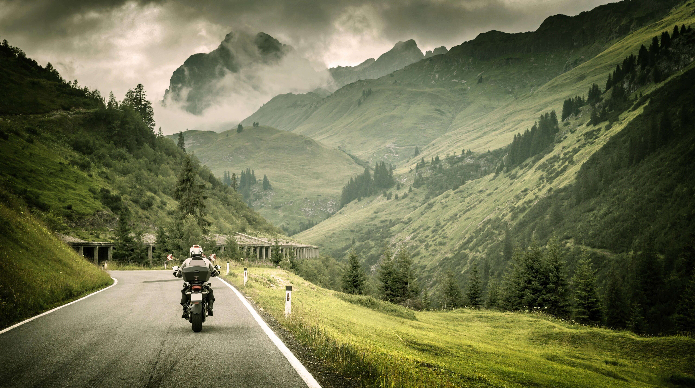

Hello, I'm Christy G. Montejo
I design and develop innovative digital solutions that combine creativity and functionality. Passionate about web development, embedded systems, and building technology that solves real-world problems.
MY HOBBIES
Explore

I enjoy discovering new technologies, tools, and ideas that expand my skills and creativity. Whether it's experimenting with code, learning emerging tech trends, or building personal projects, exploration fuels my growth as a future IT professional.
Travel 
Traveling allows me to experience new cultures, perspectives, and landscapes. It refreshes my mind, inspires creativity, and helps me appreciate the beauty and diversity of the world beyond my comfort zone.
Photography
Photography lets me capture moments, emotions, and stories through a creative lens. I enjoy turning simple scenes into meaningful visuals and preserving memories through artistic expression.